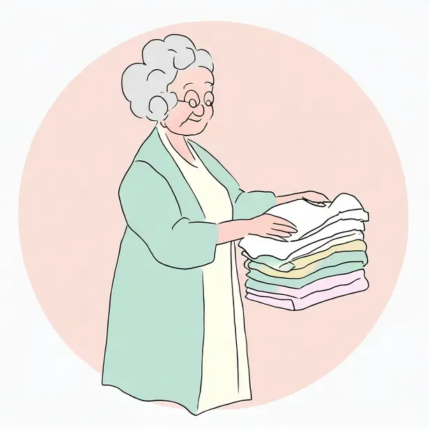
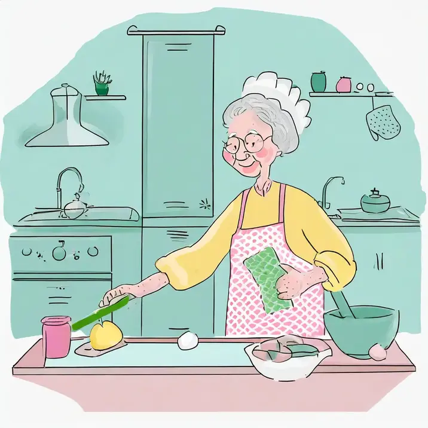
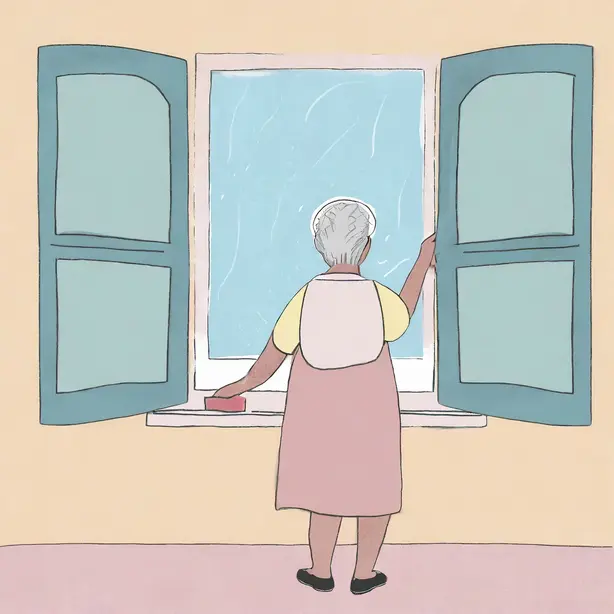
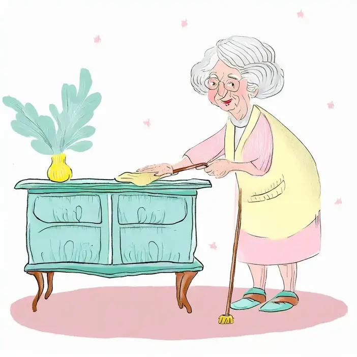
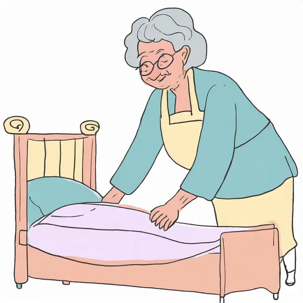
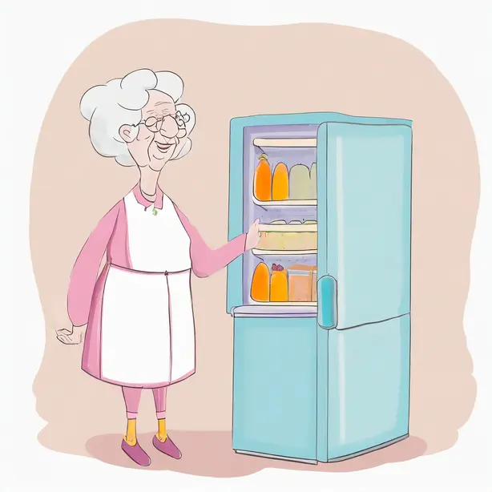
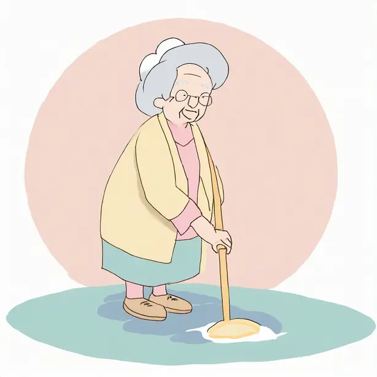

1. Piegare i panni puliti

2. Pulire la cucina

3. Lavare le finestre

4. Spolverare i mobili

5. Rifare i letti

6. Mettere in ordine il frigo
 7. Lavare i piatti
7. Lavare i piatti

8. Lavare i pavimenti